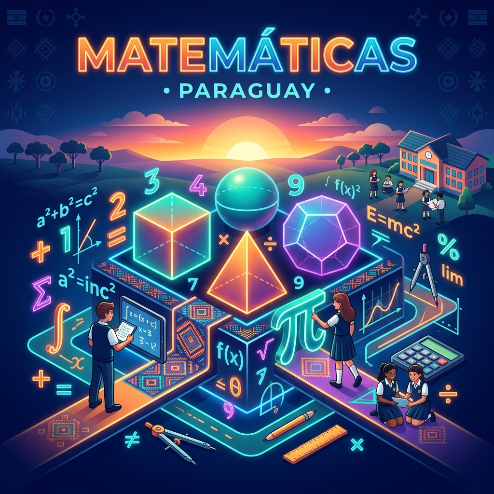

Eñemoarandu, eñeha'ã ha eikuaa matemática nde ñe'ẽme. Aprende, practica y descubre las matemáticas en el idioma guaraní de manera sencilla e interactiva.

Eikuaa papapykuéra, mba'eapo ha ta'angakuéra guaraníme con ejemplos sencillos y herramientas interactivas.
Los números en guaraní siguen un sistema decimal muy claro: 1=peteĩ, 2=mokõi, 3=mbohapy, 4=irundy, 5=po (mano), 10=pa, 100=sa.
La suma es unir o añadir cantidades. En guaraní expresamos la adición indicando los números que se unen.
La resta consiste en quitar o disminuir una cantidad. Significa "hacer bajar" o quitar elementos.
Significa "hacer más" o multiplicar varias veces una misma cantidad. Utiliza la palabra "jey" (veces).
Es repartir o dividir un total en partes exactamente iguales ("pehẽ ojueheguápe").
Estudio de las figuras geométricas: apu'a (círculo), kua'ada (cuadrado), takambyapy (triángulo) ha takambyirundy (rectángulo).
Pone a prueba tus conocimientos en matemáticas y guaraní. Selecciona la respuesta correcta, acumula puntos y aprende con la explicación.
Glosario de términos matemáticos en Guaraní Paraguayo con su definición en Español.
¿Por qué necesitamos y usamos la matemática en nuestra vida cotidiana?
Al ir al almacén o al mercado a comprar chipa, tereré o provisiones, usamos la suma y la resta para calcular el precio total y verificar nuestro vuelto.
Para calcular a qué hora tomar el colectivo, cuánto tarda el viaje a la escuela o medir las dimensiones de una cancha de fútbol en metros.
Las hermosas artesanías paraguayas como el Ñandutí y el Ao Po'i requieren geometría: simetría, círculos (apu'a), cuadrados y conteo preciso de hilos.